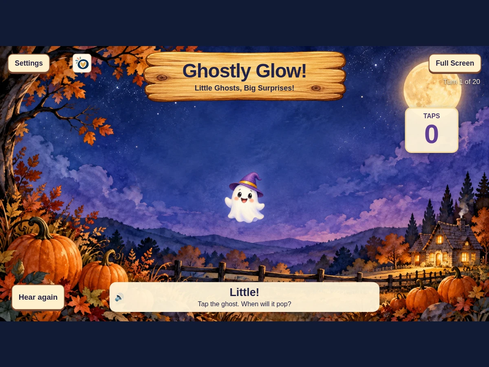

Ways to use it
- Tap along and guess when the little ghost will pop.
- Play with different ghost faces, a witch hat, and playful wiggles in Variety mode.
How to play
- Start a game and watch the taps count up.
- Keep tapping — each ghost pops after 3 to 7 taps.
- Play through your turns and meet the next ghost.
Practical details
Teacher settings choose the number of turns, narration, sound effects, and Variety mode. Hear again replays the current spoken prompt.
Explore together
Invite children to explain what they notice and talk through their choices.